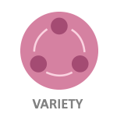

How can web development provide you with exciting opportunities and a new career path?
Why Web Development?
How can web development provide you with exciting opportunities and a new career path?
Web development (programming, coding, and design) is a fast-growing field, with a high demand for individuals who possess these particular skill sets.
With the wide variety of specialties in web development, there is something for everyone! For those with more mathematical minds, a focus on the nuances of programming languages might be desirable. Creative, artistic individuals might find themselves drawn to UX/UI specialization or graphic design.
There is flexibility in both the learning process and the working environment. With so many options available for learning web development (independent study through various websites, part-time and full-time classroom study, distance learning), there is sure to be something that fits with your situation. And with your new skill set, you will find that a variety of work situations are available to you. Freelance, remote working, pet-friendly offices, and flex schedules are just a few examples of common working arrangements for people in web development.
Web development (programming, coding, and design) is a fast-growing field, with a high demand for individuals who possess these particular skill sets.
With the wide variety of specialties in web development, there is something for everyone! For those with more mathematical minds, a focus on the nuances of programming languages might be desirable. Creative, artistic individuals might find themselves drawn to UX/UI specialization or graphic design.
There is flexibility in both the learning process and the working environment. With so many options available for learning web development (independent study through various websites, part-time and full-time classroom study, distance learning), there is sure to be something that fits with your situation. And with your new skill set, you will find that a variety of work situations are available to you. Freelance, remote working, pet-friendly offices, and flex schedules are just a few examples of common working arrangements for people in web development.